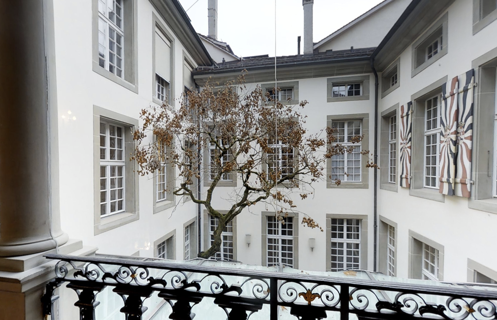
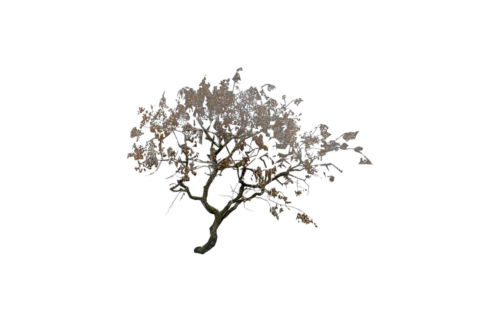
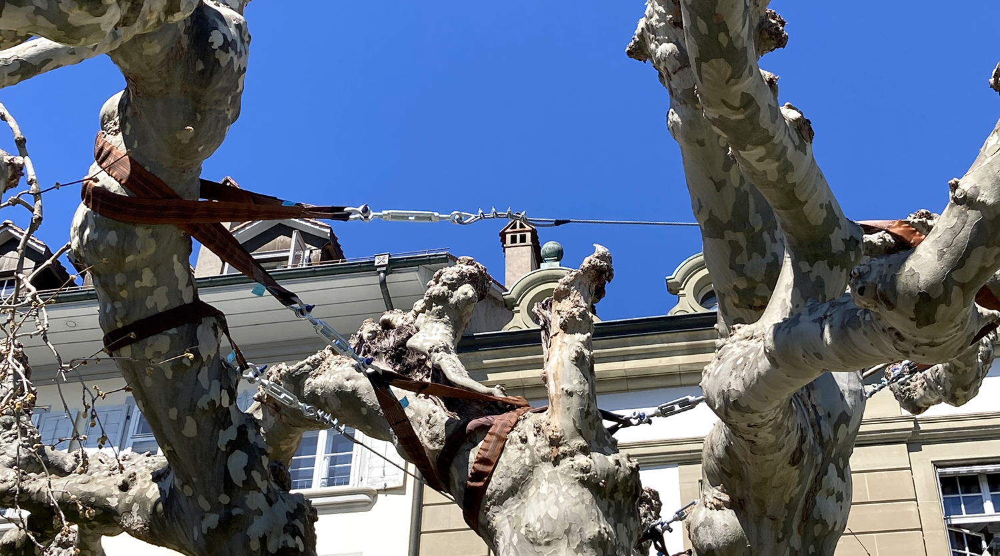
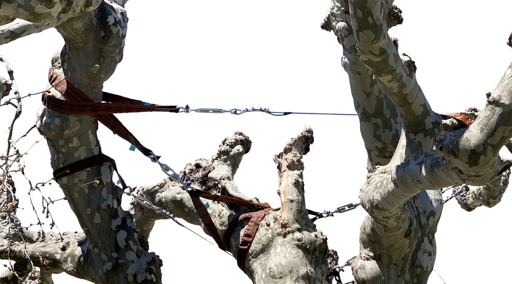

«Üse gsed chli besser us.»
«Ui ja, de heds halt au chli schwirig hie.»
×
Vom Treppenaufgang ins Obergeschoss blickt man direkt auf den Innenhof.
Die Glasscheibe dafür wurde an die Steinsäulen perfekt angepasst.
Architektonische Eingriffe ins Gebäude sind möglich – wenn es denn den gewählten Prioritäten entspricht.
×
 Dieser Austausch wurde an der Erkundungstour im Beatrice von Wattenwyl-Haus aufgeschnappt. Der Baum im Innenhof scheint es
tatsächlich nicht leicht zu haben.
Dieser Austausch wurde an der Erkundungstour im Beatrice von Wattenwyl-Haus aufgeschnappt. Der Baum im Innenhof scheint es
tatsächlich nicht leicht zu haben.
 Es gibt aber auch noch andere Bäume in und um den Repräsentationsbau. Wer in Bern auch nur wenig Zeit verbracht hat,
ist solchen Bäumen wohl sogar schon begegnet.
Es gibt aber auch noch andere Bäume in und um den Repräsentationsbau. Wer in Bern auch nur wenig Zeit verbracht hat,
ist solchen Bäumen wohl sogar schon begegnet.


Denn im Garten des Von Wattenwyl-Hauses stehen Bäume. Ihre Kronen werden in einem poetischen Akt mit Spanngurten und Kabeln in Form gehalten.
Betrachtet man die Bäume von der Pläfe, bemerkt man dieses aufwändige Herrichten nicht. Der stabile und klar definierte Schein bleibt.
×